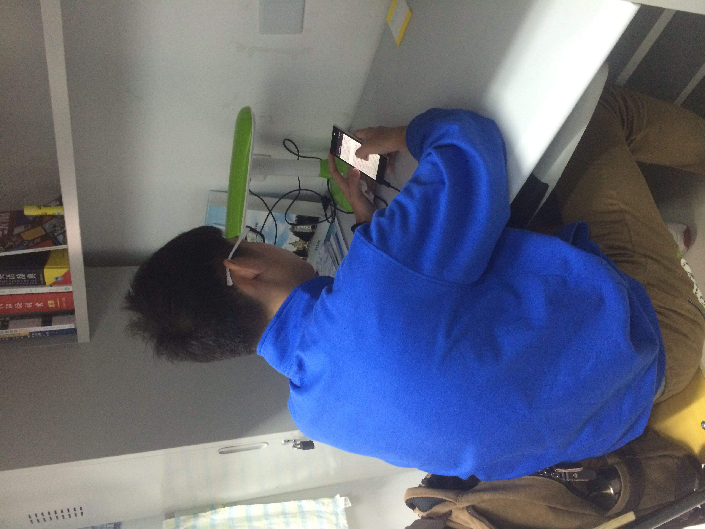
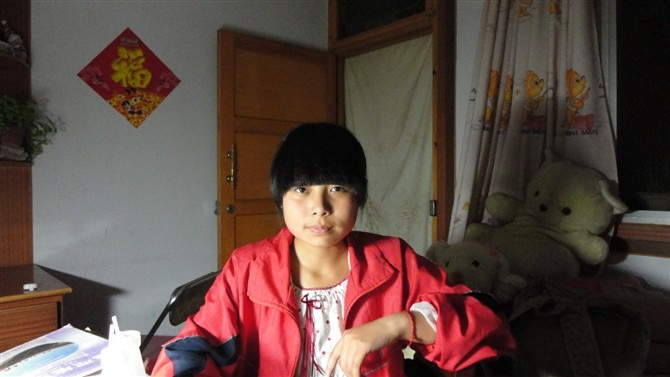

| ************************************************************************************************************************************************************************ |
| ************************************************************************************************************************************************************************ |


| |
首页 | 关于该网站 | 联系我们 | 服务与帮助 | |
|  |
|  | /> |
 |
 |
网站由燕江弟创建，联合创始人及核心团队均来自东北大学软件学院，详细请进入东北大学官网www.neu.edu.cn查找软件学院软件工程1404班燕江弟